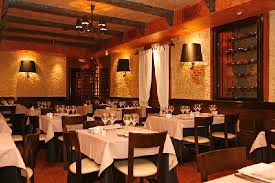

Donec et metus
Donec et metus sit amet augue mattis bibendum et ut nunc. Donec eleifend laoreet suscipit. In ullamcorper leo vel dui consectetur eu sodales nisl iaculis. Ut posuere ullamcorper nunc eu gravida. Maecenas pulvinar rutrum feugiat. Morbi dolor nibh, gravida vel lobortis quis, aliquet eget massa. In lectus risus, adipiscing id consequat non, ultricies non ligula. Maecenas a orci vitae erat elementum pretium. In ut arcu vel quam luctus faucibus vitae ac lectus. Mauris in lacus tristique augue aliquet tempor.
In eu viverra nibh. Phasellus interdum feugiat sapien ac volutpat. Nulla facilisi. Quisque condimentum consectetur tortor ut pulvinar. Sed a ipsum sollicitudin enim porta consectetur. Proin scelerisque leo quis dui lacinia commodo. Nunc erat massa, lacinia nec venenatis id, lacinia et nulla. Vivamus quis ipsum tellus, non gravida augue. Cras eget lectus et tortor convallis fringilla. Praesent et augue urna, dapibus dignissim orci. Duis gravida malesuada est sit amet ultricies. Cras ultrices vulputate magna, egestas pharetra purus pellentesque vel. Integer ornare, dui at volutpat varius, urna justo consequat velit, ornare egestas est nisl feugiat nulla. Proin fermentum turpis ut arcu semper vel tincidunt leo auctor. Nam ut augue nunc, et euismod tellus.
Pellentesque vitae feugiat
Pellentesque vitae feugiat eros. Cras commodo porttitor enim ac ullamcorper. Aenean pellentesque metus eget nisl pharetra ut semper risus rutrum. Cras accumsan aliquet enim, quis facilisis leo lacinia quis. Mauris non neque arcu, et tristique tortor. Etiam vitae neque justo. Morbi vel suscipit enim. Vestibulum neque ligula, consectetur pharetra hendrerit id, pretium tempus sem. Sed nec felis justo, tempus viverra urna. Vestibulum id nisl quis libero fermentum sodales nec a felis. Nunc turpis metus, pharetra ac fermentum pellentesque, mollis eget quam. Aenean sed lorem id tellus rhoncus volutpat non vitae neque.
In eu ligula a felis egestas placerat. Integer tempus tempus mauris, id pellentesque mauris tempor nec. Nulla leo massa, venenatis id iaculis at, semper in lectus. Nullam fermentum est sit amet felis aliquet varius dapibus dolor tempus. Maecenas volutpat leo eu turpis suscipit fermentum id eget nisi. Donec ac neque nec massa placerat aliquet vitae vitae ligula. Fusce ac urna vitae ipsum mattis porta id ac lorem. Aenean tempus interdum iaculis. Ut ac euismod neque. Etiam quis ipsum sem, eu vestibulum est.
Sed ultricies porta ligula
Sed ultricies porta ligula, convallis ultricies risus ultrices nec. Quisque pellentesque sagittis leo, et vehicula quam tempor vel. Nulla mollis tincidunt leo, vitae mollis risus posuere et. Praesent lacinia eros ut purus adipiscing ullamcorper. Pellentesque habitant morbi tristique senectus et netus et malesuada fames ac turpis egestas. Pellentesque interdum, erat non condimentum commodo, libero urna fermentum mi, tristique pharetra risus tellus sit amet elit. Nullam vel quam nibh, quis vehicula dolor.
Nulla mi sem, dictum eget euismod ac, adipiscing a ante. Nam rutrum eros et turpis commodo facilisis. Pellentesque elementum varius libero. Vestibulum commodo massa vel leo consectetur vitae lacinia lacus mattis. Phasellus ac ligula eu lorem lobortis laoreet nec sed odio. Duis eu elit enim, in varius libero. Ut et velit nunc, in egestas metus. Donec dui elit, semper non suscipit eget, vestibulum quis leo.